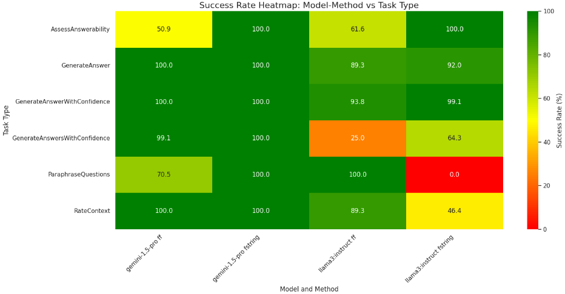
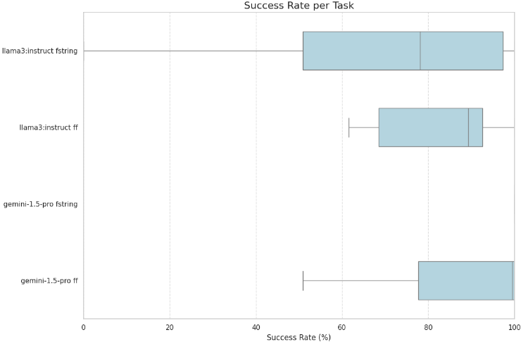
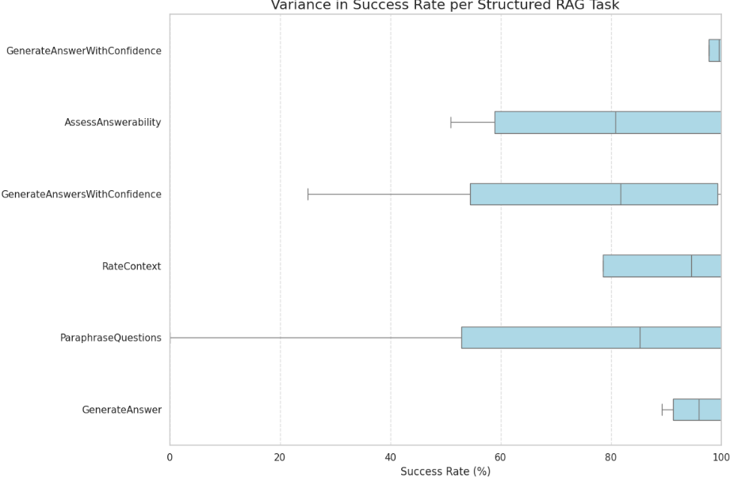

StructuredRAG：用 LLM 进行 JSON 响应格式化
LLM 在 Compound AI Systems（如 Multi-Hop RAG）中生成的中间结果必须符合特定 JSON 格式才能被下游组件解析，但 zero-shot 下模型遵循格式指令的能力缺乏系统测量。论文构建 StructuredRAG 基准，基于 WikiQuestions 数据集（112 个问题）设计 6 类 RAG 场景任务，覆盖 string/integer/boolean、List[string] 与 AnswerWithConfidence 复合对象等输出类型，对比 Gemini 1.5 Pro 与 4-bit 量化 Llama 3 8B-instruct 在 f-String 与 Follow the Format（FF）两种提示策略下的表现，并用 OPRO 做自动提示优化。24 组实验平均成功率 82.55% 但方差极大（0%~100%）；Gemini 平均 93.4% 优于 Llama 的 71.7%，列表与复合对象输出任务明显更难。提示策略无普适优劣、效果因模型而异；OPRO 在首轮前 10 个候选改写中即找到 100% 成功的提示，表明不依赖结构化解码也能可靠获得合法 JSON。
Compound AI Systems 中各组件（如 Multi-Hop RAG 的 query writer 向搜索工具传递结果）依赖 LLM 输出可解析的特定 JSON 格式；结构化解码方法虽能保证格式，但可能降低推理吞吐、增加系统集成复杂度并干扰模型先验与提示优化收益。论文要系统测量 LLM 在 zero-shot、不使用结构化解码条件下遵循 JSON 响应格式指令的真实基线能力。
构建 StructuredRAG 基准：基于 WikiQuestions 数据集（56 个 Wikipedia 标题-摘要对，由 Gemini 1.5 Pro 生成并经人工校验的可回答/不可回答问题，共 112 题），设计 6 类输出类型任务（string、integer、boolean、List[string]、AnswerWithConfidence 复合对象、List[AnswerWithConfidence]），以输出能否被解析为要求键名与类型的 JSON 判定成功；对比 Gemini 1.5 Pro API 与 Ollama 托管的 4-bit 量化 Llama 3 8B-instruct，温度设为 0；比较 f-String（任务变量直接嵌入提示）与 Follow the Format/FF（先任务说明、再格式要求、再输入变量，源自 DSPy）两种提示策略；并用 OPRO（GPT-4 提议改写、以 JSON 校验为评分指标、40 训练/16 测试划分、每轮 25 个候选共 2 轮）自动优化失败率高的任务提示。
24 组实验平均成功率 82.55%，成功率从 0% 到 100% 高方差；11/24 达 100%，2/24 ≤25%，5 个在 45%~75%
Gemini 1.5 Pro 平均成功率 93.4%，高于 Llama 3 8B-instruct 的 71.7%
列表与复合对象任务更难：ParaphraseQuestions 平均 72.1%、GenerateAnswersWithConfidences 平均 67.6%；这两项上 Gemini 达 99.6% 与 85.3%，Llama 仅 44.7% 与 50%
f-String 提示对 Gemini 1.5 Pro 更优（100% vs FF 的 86.8%），FF 提示对 Llama 3 8B-instruct 更优（76.5% vs f-String 的 67.0%）
OPRO 优化 Llama 3 8B-instruct 的 GenerateAnswersWithConfidences 提示，在第一轮前 10 个候选改写中即找到 100% 成功的提示
与依赖结构化解码保证 JSON 合法性的既有路线（DOMINO、LMQL、语法约束解码 GCD、YieldLang 等）不同，本文提出一个新的基准来测量 zero-shot、无结构化解码条件下的格式遵循基线，并揭示提示策略效果因模型而异的交互现象（f-String 与 FF 无普适优劣）；同时验证 OPRO 自动提示优化可作为不依赖解码约束获得合法 JSON 的替代路径。
相关度级别：high
命中能力域：3.2 提示工程 | 3.5 评测与可靠使用 | 3.3 Agent 架构与工具使用
理由：团队用 LLM/Agent 构建自动化工具，流水线组件间普遍依赖可解析的结构化输出（代码审查结论、测试生成、知识库问答的结构化答案、工具调用参数等）。论文直接命中 3.2 提示工程（f-String 与 FF 提示结构对比、OPRO 自动提示优化）与 3.5 评测与可靠使用（格式遵循可靠性基准、失败模式分析、开源代码与结果）；结构化 JSON 输出也是工具/函数调用可靠性的基础，论文明确指出其与 function call generation 的相似性，故与 3.3 相关。其结论（列表/复合对象更易失败、提示策略因模型而异、OPRO 可修复高失败任务）可直接指导团队的模型选型、提示模板设计与输出校验兜底策略。
建议动作：深入精读并做内部分享
arXiv:2408.11061v1 [cs.CL] 2024年8月7日
Connor Shorten Weaviate Charles Pierse Weaviate Thomas Benjamin Smith Weaviate Erika Cardenas Weaviate Akanksha Sharma Weaviate John Trengrove Weaviate Bob van Luijt Weaviate
大语言模型（LLMs）生成结构化输出（如 JSON）的能力，对于其在复合人工智能系统（Compound AI Systems）中的应用至关重要。然而，评估和提升这一能力仍然具有挑战性。在本工作中，我们提出了 StructuredRAG，这是一个由六项任务组成的基准测试（benchmark），旨在评估 LLMs 遵循响应格式指令的熟练程度。我们采用两种不同的提示策略评估了两个最先进的 LLMs：Gemini 1.5 Pro 以及经过 4 位量化的 Llama 3 8B-instruct。我们将这两种提示策略分别称为 f-String 提示和 Follow the Format（FF）提示。在 24 项实验中，我们发现平均成功率为 82.55%。我们进一步发现，性能在不同任务、模型和提示策略之间存在很高的方差，成功率介于 0 到 100% 之间。我们发现 Llama 3 8B-instruct 的表现常常可与 Gemini 1.5 Pro 相媲美。我们观察到，任务复杂度对性能有显著影响，其中涉及列表或复合对象输出的任务被证明更具挑战性。我们的研究结果凸显了开展进一步研究的必要性，以提升 LLMs 结构化输出生成的可靠性和一致性。我们已在 github.com/weaviate/structured-rag 开源了实验代码和结果。
大语言模型（Large Language Models, LLMs）在零样本学习（Zero-Shot Learning）方面已变得极为有效。零样本学习用于描述机器学习模型在事先未获得任何针对该任务的训练数据的情况下执行任务的能力。一个新兴的重要领域是，不仅要测试 LLMs 执行新任务的能力，还要测试它们以特定格式组织其输出的能力。对于开发由多次 LLM 推理或外部计算工具构成的复合AI系统（Compound AI Systems）[1, 2] 而言，这是一项关键要求。例如，多跳检索增强生成（Multi-Hop RAG）[3] 就是一种复合AI系统：其中一次 LLM 推理首先针对输入预测一个或多个搜索查询，然后将这些查询发送给搜索工具；随后，另一次 LLM 推理将这些搜索结果与原始问题聚合起来以生成响应。为了使 Multi-Hop RAG 系统能够解析查询生成器（query writer）的响应并将其发送给搜索工具，查询生成器遵循特定的响应格式至关重要，例如以 'queries' 为键、以字符串列表为值的 JSON。
在本工作中，我们试图衡量 LLMs 在零样本学习条件下遵循 JSON 响应格式指令的能力。尽管诸如 DOMINO [4] 之类的结构化解码方法已成为在复合AI系统中确保正确 JSON 输出的流行解决方案，我们仍希望更好地理解零样本学习的基线性能。结构化解码可能会降低推理吞吐量、使系统集成复杂化，并干扰 LLM 的先验知识以及提示优化（prompt optimization）[5] 带来的收益。为解决这些问题，我们构建了一个由六项受 RAG 启发 [6] 的结构化输出测试组成的新型基准测试（benchmark）。这些测试探索了不同类型的 JSON 响应，例如字符串、整数或布尔值，以及输出字符串列表，记作 List[string]。此外，我们展示了在每个实例中包含多于一种类型的复合对象的使用。我们提出了 AnswerWithConfidence 复合对象，它由一个字符串类型的 answer 和一个整数类型的 confidence 组成。我们进一步测试了输出 AnswerWithConfidence 对象列表的能力，类似地记作 List[AnswerWithConfidence]。如果 LLM 的输出能够被解析为所请求的 JSON 响应格式，则该输出通过这些测试。这意味着输出必须同时包含正确的键以及每个值所对应的正确类型。我们使用 Gemini 1.5 Pro API [7] 以及由 Ollama [9] 托管的经过 4 比特量化（4-bit quantization）[8] 的 Llama 3 8B-instruct 来运行测试，并将任务限制为避免使用结构化解码方法，我们将在论文后文对此进一步讨论。在本研究中，我们衡量将 LLM 响应解析为所需 JSON 格式的成功率。我们将推理吞吐量的比较，以及响应格式化与任务性能（例如答案正确性）之间的纠缠问题留待未来工作。

图 1 展示了我们研究结果的概览。我们发现，当任务要求输出单个字符串、整数或布尔值等简单输出类型时，性能要好得多，而在列表输出和复合对象上，性能则显著下降。我们发现 Llama 3 8B-instruct 存在两个高失败率的案例：一是在 ParaphraseQuestions 中输出字符串列表时，二是在 GenerateAnswersWithConfidences 中输出复合对象列表时。在 24 项实验中，我们发现 11 个案例的结构化输出成功率达到 100%。我们发现 Gemini 1.5 Pro 和 Llama 3 8B-instruct 在该基准测试（benchmark）上表现相当，且各自在不同任务上各有优势。我们的结果表明，未来需要针对结构化输出生成开展进一步研究。
我们的贡献如下：
我们提出了 WikiQuestions，这是一个将检索增强生成（Retrieval-Augmented Generation, RAG）系统的生成环节单独剥离出来的数据集 [6]。WikiQuestions 包含 56 个随机选取的维基百科标题和摘要。每个维基百科标题-摘要示例包含一个可回答的问题和一个不可回答的问题，这些问题由 Gemini Pro 1.5 [7] 生成，并经过人工监督进一步验证。因此，每次测试我们最终得到 112 个问题。图 2 展示了 WikiQuestions 数据集中的一个示例。所示摘要仅有 30 个 token，是我们数据集中最短的示例。我们进一步使用长达 500 个 token 的更长摘要进行实验。我们认为，探索 StructuredRAG 基准测试（benchmark）在处理从搜索数据库检索到的更长或含噪上下文时的性能扩展情况，将是未来工作中一个有趣的机会。基于 Liu 等人 [10] 和 Shi 等人 [11] 的先前工作，我们假设这将使任务更具挑战性。
2
| 0 | 1 |
|---|---|
| Title | MAP4K3 |
| Abstract | Mitogen-activated protein kinase 3 is a protein that in humans is encoded by the MAP4K3 gene. |
| Answerable Question | What does MAP4K3 encode in humans? |
| Unanswerable Question | What are the specific functions of the MAP4K3 protein? |
| 0 | 1 |
我们提出了 Structured RAG 基准测试，它由六项测试组成，用于衡量对响应格式指令的遵循能力。Structured RAG 测试的响应格式涵盖字符串、整数、布尔值、字符串列表、一个复合的 AnswerWithConfidence 对象，以及 AnswerWithConfidence 对象列表。最常见的失败情形是大语言模型（LLM）API 通过确认任务来作出响应，例如回复 "Sure, I can help you with that!' 或 'Here is the output in the required JSON format:'。有趣的是，我们受 DSPy 启发的 Follow the Format（FF）提示方法会诱使模型偶尔失败，即在生成内容后附加一个 'Reasoning: . . . ' 后续内容，这类似于思维链（Chain-of-Thought, CoT）提示 [12] 在 DSPy [13, 14] 中的实现方式。我们进一步将模型输出字符串类型而非整数的情况视为失败。例如，输出 {"context_score": '4'} 即被视为失败。所执行的六项任务、它们的输出类型以及一个成功示例见图 6。StructuredRAG 基准测试给出了与 RAG 系统相一致的结构化类型输出。StructuredRAG 测试并不特定于 WikiQuestions，可以适配到任何 RAG 系统。
我们将 Gemini 1.5 Pro [7] 与 Llama 3 8B [8, 9] 的指令微调变体的 4-bit 量化版本进行了比较。我们选择这些模型，是为了更好地理解诸如 Gemini 1.5 Pro 这类规模最大、通常能力也最强的可用语言模型，与诸如 Llama 3 8B-instruct 这类较小模型之间的性能差距。我们发现，在比较所有任务的平均性能时，Llama 3 8B-instruct 的表现与 Gemini 1.5 Pro 相当、具有竞争力。然而，如图 4 所示，我们发现 Llama 3 8B-instruct 的性能存在很高的方差，这是由于它在两项任务上出现了大规模失败。所有测试均在单线程、单节点环境下运行。所有大语言模型（LLM）API 均在 temperature 设置为 0 的条件下进行测试，以尽量减少响应中的随机性。我们将对其他 LLM 性能的探索留待未来工作。
我们比较了两种用于响应格式化的提示策略，并将其称为 f-String 提示（f-String prompting）和 Follow the Format（FF）提示。我们将 f-String 提示定义为在提示中嵌入任务特定变量的方式，而 Follow the Format（FF）提示则遵循一种更为严格的格式：先说明任务，再说明响应格式，最后给出输入特定变量。task_instructions 和 response_format 这两个输入变量在各个 StructuredRAG 任务（例如 ParaphraseQuestions）中保持一致。例如，ParaphraseQuestions 任务的 task_instructions 为 'Generate 3 paraphrased versions of the given question.'，response_format 为 '{'answer': 'string', 'confidence': 'int (0-5)'}'。随后，参考内容（references）会注入特定的上下文和问题对以进行推理。图 7 展示了 f-String 提示和 FF 提示的示例。正如在 DSPy 框架中所使用的那样，FF 提示清晰地区分了通用指令、格式要求和任务特定输入。我们的研究旨在了解 f-String 提示更自然的语言风格是否相比 FF 提示具有性能优势。我们并未发现这种优势。尽管我们通过将 OPRO 优化器应用于 FF 提示方法取得了成功的结果，但仍需进一步研究以理解提示结构中的先验与新兴优化方法之间的相互作用。
3

我们在 StructuredRAG 基准测试上的实验结果揭示了若干关键发现。如图 1 和图 4 所示，我们可以看到性能存在非常大的方差。我们发现了性能不佳的情况，尤其是在使用 f-String 提示测试 Llama 3 8B-instruct 处理 Paraphrase Questions 时（成功率为 0%），以及在使用 FF 提示测试 Llama 3 8B-instruct 处理 GenerateAnswersWithConfidence 时（成功率为 25%）。Gemini 1.5 Pro 的表现优于 Llama 3 8B-instruct，平均成功率达到 93.4%，而后者为 71.7%。我们发现 ParaphraseQuestions（涉及字符串列表输出）和 GenerateAnswersWithConfidences（要求以复合对象列表作为输出）的成功率较低，平均成功率分别为 72.1% 和 67.6%。这些任务也是 Gemini 1.5 Pro 与 Llama 3 8B-instruct 之间差距更加明显之处，Gemini 1.5 Pro 的成功率分别达到 99.6% 和 85.3%，而 Llama 3 8B-instruct 的得分分别为 44.7% 和 50%。我们发现对于 Gemini 1.5 Pro，f-String 提示的表现优于 FF 提示，取得了更优的 100% 成功率，相比之下为 86.8%。相反，我们发现对于 Llama 3 8B-instruct，FF 提示的表现更好，成功率达到 76.5%，相比之下为 67.0%。
随后，我们测试了 OPRO 优化器 [15]，用于为 GenerateAnswersWithConfidences 任务优化 Llama 3 8B-instruct 提示，该任务要求输出一个复合对象列表。OPRO 提示优化的工作方式是：首先对原始提示提出调整建议，然后使用一个指标（在我们的情形中为 JSON 验证）和一个训练集来为新提示评分——我们将 WikiQuestions 数据集划分为 40 个训练样本和 16 个测试样本。随后，OPRO 利用每个候选提示相对于该指标的得分信息来提出新的提示。我们使用 GPT-4 大语言模型（LLM）[16] 来提出改写版本。我们将 OPRO 设置为每轮提出 25 个新候选提示，并持续进行 2 轮。不过，我们注意到 OPRO 在第一轮的前 10 个改写版本中就找到了成功率为 100% 的提示。OPRO 优化所发现的最终提示如图 7 所示。优化后的提示添加了诸如“细致审阅 task_instructions，确保在开始回答之前充分理解”之类的注释，以及其他若干指令，“以保证输出纯净且正确的 JSON”。OPRO 优化的成功表明了一条无需额外解码方法即可实现 JSON 响应格式化的途径。我们将理解 MIPRO [17] 或 BetterTogether [18] 等更先进的提示优化器对 StructuredRAG 的影响留作未来工作。
4
各 Structured RAG 任务的成功率方差

在本工作中，我们旨在呈现 StructuredRAG 基准测试（benchmark）以及若干简单的基线方法及其相应的性能。我们注意到，存在若干有前景的方向可以提升在该测试上的性能，例如集成（ensembling）、重试机制以及思维链（Chain-of-Thought, CoT）提示。集成是指利用大语言模型（LLM）的随机特性为每个输入生成多个输出 [19, 20]。在我们的实验中，我们对 3 次试验的结果取平均。我们得到了一致的结果，这表明简单地重试不太可能成功。然而，我们确实发现在某些任务上 f-String 与 FF 提示之间存在显著方差，这表明结合提示改写（prompt paraphrasings）进行集成可能是有前景的。
此外，测试思维链（CoT）提示策略 [12] 也可能是有前景的。这需要在模型的输出中添加一个 'rationale' 键，从而借助额外的推理来提升模型的性能。然而，这将要求输出成为一个复合对象，其中包含额外的 "rationale" 键以及字符串值的响应。我们的结果表明，这种额外的输出结构可能导致更低的成功率。与结构化解码方法在思路上类似，在提示的末尾加上 '{' 前缀，或使用该键，例如 '{'paraphrased_questions': ["，也可能会有所帮助。
另一种有前景的方法是对失败的输出应用“重试”提示。例如，一个 f-string 提示可以是：'一个系统产生了如下输出：{output}。该输出已被判定为未能满足此处给出的响应格式指令：{response_format}。请将该输出修正为所需的响应格式'。这与 Reflexion [21] 提示类似，后者引入了通过自我反思将 LLM 调用串联起来的思想。这种 LLM 计算范式也正由 DSPy Assertions [22]、SPADE [23] 等工作所开创，这些工作进一步致力于在复合人工智能系统（Compound AI Systems）[24] 中验证并修正输出。
5
我们在 StructuredRAG 方面的工作与大语言模型（LLM）结构化解码（Structured Decoding）领域的最新进展密切相关。语言模型查询语言（LMQL）[25] 提出了一种查询语言，将提示与输出约束及结构相结合。DOMINO 算法 [4] 进一步对面向 LLM 的受约束解码方法进行了新颖的实验探索。DOMINO 同样在 JSON 生成任务上进行了评估，此外还包括 Mermaid 流程图创建和函数调用生成。我们注意到，函数调用生成与遵循 JSON 响应格式指令的任务非常相似。然而，我们认为一个关键区别在于，函数调用生成方面的工作还进一步关注将任务路由到特定函数 [26]。DOMINO 利用了许多先进的结构化解码方法，例如预计算、投机解码（speculative decoding）[27] 和机会性掩码。DOMINO 同时度量了响应格式准确率与下游任务准确率，而我们将后者留待未来工作。在 JSON 任务上，DOMINO 相比无约束生成实现了高达 1.77 倍的吞吐量提升，并在新引入的 QuizGen 任务中将性能从 37.6% 提升至 98.8%。
本工作还与大语言模型采样中的形式文法（Formal Grammars）相关。由 Geng 等人 [28] 主导的文法约束解码（Grammar-constrained Decoding, GCD）为信息抽取提出了形式文法。类似地，JSON 也可由一个上下文无关文法来描述，该文法定义了其结构，包括对象、数组、字符串、数字和布尔值。GCD 同样以无需微调模型权重的受约束解码为目标，旨在生成结构化输出的同时保持模型的通用能力与灵活性。Wang 提出了 YieldLang [29]，引入了异步解析等关键系统工程概念。YieldLang 提出了一种基于协程的框架，利用 Python 的 yield 关键字来生成领域特定语言（DSL）。这实现了对 DSL 的高效解析与生成，类似于上下文无关文法的生成。这些关于结构化解码的工作主要关注高效执行，并凸显了结构化输出在人工智能系统中日益增长的重要性，这促使我们思考它们在复合人工智能系统中的作用。
我们的工作解决了复合人工智能系统（Compound AI Systems）发展中的一个关键需求。Zaharia 等人 [1] 指出：“最先进的 AI 成果越来越多地由包含多个组件的复合系统获得，而不仅仅是单体模型。”这些组件通常需要特定的输出格式，以便被解析并传递给下一个组件。Santhanam 等人 [2] 提出的 ALTO 等工作进一步探讨了工程化复合人工智能系统时可用的众多新兴优化方法。ALTO 展示了结构化响应格式如何支持中间响应的流式传输，并对聚合感知路由接口和分布式提示感知调度等系统开展了进一步研究。Zheng 等人进一步提出了 SGLang，即“一个用于高效执行复杂语言模型程序的综合系统” [30]。SGLang 解决了编程和执行需要多次生成调用、高级提示技术以及结构化输入/输出的语言模型（LM）程序时所面临的挑战，其关键创新包括：用于高效 KV 缓存复用的 RadixAttention、用于加速受限解码的压缩有限状态机，以及面向纯 API 模型的 API 投机执行。我们将把在 StructuredRAG 等基准测试（benchmark）上测量 SGLang 和 vLLM [31] 风格的解码与推理吞吐量留作未来工作。
总而言之，本研究提出了 StructuredRAG 基准测试（benchmark），用于评估大型语言模型（LLM）在不依赖结构化解码方法的情况下生成结构化输出的能力。我们使用 Gemini 1.5 Pro 和 Llama 3 8B-instruct 进行的实验表明，在不同结构化生成任务和提示策略下，性能存在显著差异。这些结果凸显了 LLM 在生成复杂结构化输出方面的能力差异。虽然一些模型在处理列表和复合对象时表现不佳，但另一些模型在这些任务上表现出色，这表明仍有进一步提升的潜力。我们将探索集成（ensembling）、重试机制、思维链（CoT）提示以及提示优化等先进技术留作未来工作，以便在不使用结构化解码方法的情况下进一步提升响应格式化的性能。